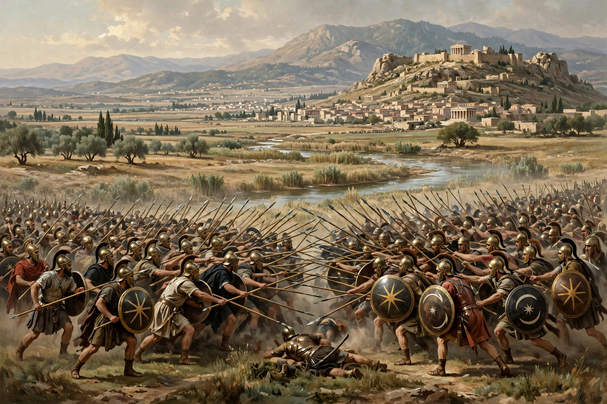

| Battle of Corupedium | |
|---|---|
| Part of the Wars of the Diadochi | |
| Date | 281 BC |
| Location | Plain of Corupedium, near Sardis, Lydia (modern Turkey) |
| Result | Decisive Seleucid victory Death of Lysimachus; end of the Diadochi era |
| Belligerents | |
| Seleucid Empire | Kingdom of Thrace and Macedonia |
| Commanders and leaders | |
| Seleucus I Nicator | Lysimachus † |
| Strength | Unknown |
| Casualties and losses | Unknown |

The Battle of Corupedium, also spelled Corupedion or Koroupedion (Ancient Greek: Κόρου πεδίον, "the plain of the satiety"), was the last battle between the Diadochi, the rival successors of Alexander the Great. It was fought in 281 BC between the armies of Lysimachus and Seleucus I Nicator. Lysimachus had ruled Thrace and much of western Asia Minor for decades. With his defeat and death, the Diadochi period effectively came to an end, and Seleucus stood on the verge of uniting nearly the whole of Alexander's empire.
Lysimachus and Seleucus had been allies at the Battle of Ipsus in 301 BC, where they defeated Antigonus I Monophthalmus. In the following years, however, tensions grew. Lysimachus had annexed much of Asia Minor and, after the death of Cassander, had also taken control of Macedonia, ruling an empire stretching from the Ionian Sea to central Anatolia.
Domestic intrigue weakened Lysimachus' position. His wife Arsinoe II persuaded him to execute his popular son and heir Agathocles in 284 BC, accused of treason. The execution provoked outrage; Agathocles' widow Lysandra fled to the court of Seleucus, and many cities in Asia Minor revolted against Lysimachus and invited Seleucus to intervene. Seleucus, seeing his opportunity, crossed into Asia Minor in 282 BC.
The two armies met on the plain of Corupedium, near Sardis in Lydia, in February 281 BC. Few details of the fighting survive in the ancient sources. Both kings were in their late seventies or early eighties; both had campaigned with Alexander. Lysimachus was killed in the fighting — according to some accounts by a javelin thrown by a soldier from Heraclea Pontica — and his army disintegrated. His body was reportedly found on the field guarded by his faithful dog, and was later buried at Lysimachia.
With Lysimachus dead, Seleucus crossed into Europe intending to claim Macedonia and Thrace, which would have reunited almost all of Alexander's conquests under one ruler. He never realised the prize: in September 281 BC he was assassinated near Lysimachia by Ptolemy Keraunos, a disgruntled exile from Ptolemaic Egypt. The Hellenistic world thereafter settled into the three great kingdoms of the Antigonids in Macedonia, the Seleucids in Asia, and the Ptolemies in Egypt.
Appian, Syrian Wars; Memnon of Heraclea, History of Heraclea; Justin, Epitome of Pompeius Trogus.